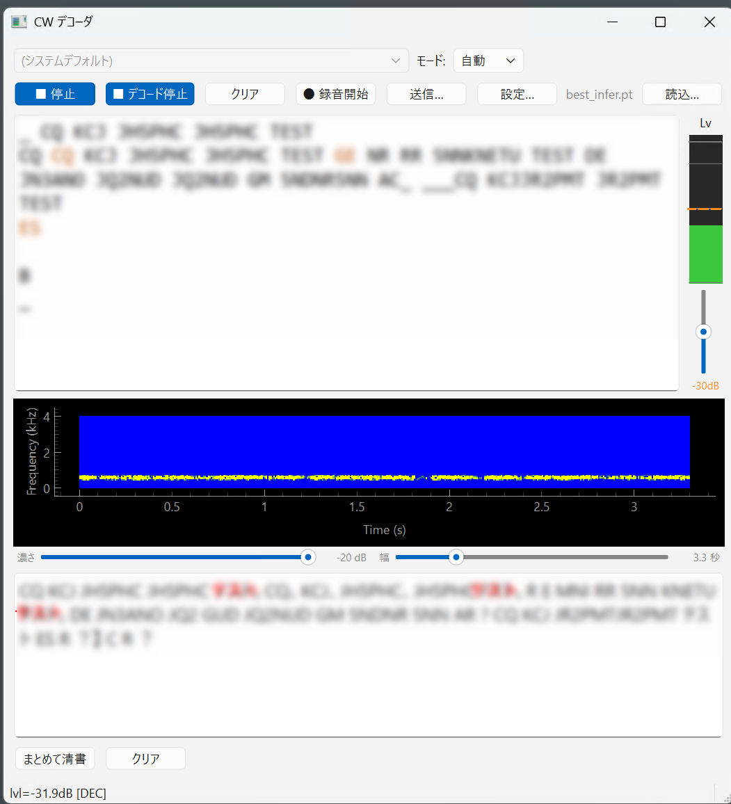

LLM 清書
デコード結果を AI に渡し、誤りの訂正・略語の展開・読みやすい日本語への書き直しを 1 回の操作で行います。結果は主画面の下のパネルに出ます。

色の意味
| 色 | 意味 |
|---|---|
| 黒 | AI が「確実に読めた」と判断した箇所（原文どおり） |
| 赤 | AI が推測・補正した箇所 |
赤い部分は AI の推測です。大事な内容は、上のデコード本文と照らし合わせて確かめてください。 赤が多くて読みにくいときは、設定の清書タブで 推測した箇所を赤で表示する を切れます（本文はそのまま出ます）。
2 つの動かし方
清書は増分方式です。一度清書した分は二度と送りません。 そのため結果は消えずに積み上がり、読んでいる途中で書き換わることもありません。
| やり方 | いつ動くか | 向く場面 |
|---|---|---|
| まとめて清書（ボタン） | 押したとき。未清書分を 1 回で全部 | 腰を据えて読み返すとき |
| 自動で清書する（設定） | 文の区切りが来たとき、そこまでを短く | 受信しながら追うとき |
自動清書が「区切り」とみなすもの
| 区切り | 備考 |
|---|---|
| 改行（3 秒以上の無音） | 送信のターンの切れ目 |
、（和文の区切点） | 改行は滅多に起きないため、句読点でも区切ります |
。（和文の段落＝文の終わり） | 同上 |
どれも文として完結した位置なので、途中で切るより自然な日本語になります。 直前の分は「参考」として一緒に渡されるので、話が繋がります。 区切りが来ない長い送信のために、間隔（初期値 20 秒）でも動く保険があります。
? は区切りにしていません
符号表に ? はありますが、読めなかった印としても出うるため、
区切りにすると読めない文字が出るたびに清書が走ってしまいます。
最初からやり直したいときは、クリア を押してから まとめて清書 を押してください（クリアで進捗が 0 に戻ります）。
AI が行うこと
| 処理 | 内容 |
|---|---|
| 誤りの訂正 | 受信の欠落や化けを、文脈から補います（欧文・和文とも） |
| 略語の展開 | CQ・RST・QTH・OM・TNX・73 などを分かりやすい日本語に開きます |
| 日本語の清書 | カタカナ交じりの文を、漢字かな交じりの読みやすい文に整えます |
| 欧文化（和文モードのみ） | コールサイン・RST・数字など、欧文として意味が通る部分を欧文に直します |
欧文モードと自動モードでは、欧文化は行いません。
清書の前に全体を読み直す
設定の清書タブにある 清書の前に全体を読み直す（初期値 ON）を入れておくと、 清書のタイミングで直近 300 秒ぶんの音を、別のスレッドで丸ごとデコードし直してから AI に渡します。
読み直しは受信とは別のスレッドで走り、音声用とは別のバッファを使います。 そのため、読み直している間もリアルタイムの表示は止まりません。 短時間で読みたい交信中の表示と全体が欲しい清書とを、 別の仕組みで賄うようにしてあります。
Ollama を使う（ローカル・無料）
ご自分のパソコンの中で動くので、API キーが不要で、インターネットに繋がっていなくても使えます。 Ollama 本体のインストールが別途必要です。
ollama.com から Windows 版をインストールします。
-
モデルを取ります。
ollama pull gemma4:e4b -
Ollama を起動します（ふだんは自動で起動しています）。
ollama serve -
設定の清書タブでプロバイダを
ollamaにし、 モデル名を入れて まとめて清書 を押します。
どのモデルを使うか
実測（held-out の和文）の結果です。12B より 4B の方が良いという逆転が起きています。
| モデル | 速さ | 結果 |
|---|---|---|
| gemma4:e4b | 0.8 秒 | ローカルでは最良。「天気は晴れです。暑いです」 |
| gemma3:4b | 0.9 秒 | 不可。テンキ ハ ハレ（晴れ）を「天気が悪い」と逆に取る |
| qwen3.5:2b | 1.6 秒 | 破綻。絵文字の羅列と繰り返し |
| gemma3:12b | 11.8 秒 | 大きいのに悪い。記号の暴走と謝罪文 |
translategemma は オハヨウ、アツイ デス、シカタ ナイ を
「こんにちは。お元気ですか？今日はいい天気ですね」と流暢に捏造しました。
翻訳モデルは「流暢な訳文を作る」訓練を受けています。
こちらが欲しいのは「壊れた入力に忠実な変換」で、目的が逆を向いています。
「短いプロンプトを使う」とは
AI への指示を 207 文字に絞ります（通常版は 1403 文字）。和文にだけ効きます。 初期値は ON です。
小さいローカルモデルには、重い指示が害になります。実測では、 2B のモデルが入力を無視して指示の例文をそのまま返し、 4B のモデルが「チューリップ」を捏造して「おはよう」を落としました。 短い版ではどちらも直りました。
欧文は通常版のままです。欧文に要るのは「触らない規律」で、 それは通常版に書いてある捏造禁止・確実さ優先の指示です （コールサインや RST を作られると実害が出ます）。